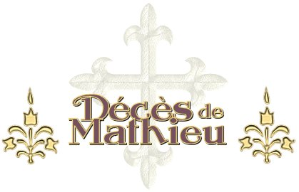
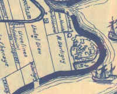

|

French version
HOME
ORIGINS
ENGAGÉ
MARRIAGE
TRAVEL
FAMILY
DEATH
SÉBASTIENNE
DESCENDANTS
SOURCES

SIGN
MY GUEST
BOOK
| |
|
 |
| PÉRIODE EMBRYONNAIRE
La vie de Mathieu ne fut pas facile, il ne connut
pas plus la paix au Canada qu'il ne l'avait connue en France.
Outre la difficulté de son travail de
défrichage, la rudesse du climat, les efforts pour s'adapter à ce
nouveau monde, l'incendie qui détruit sa maison et ses biens le 12 mars
1651, il faut ajouter la première guerre franco-iroquoise.
Elle a débuté en 1641 et va durer vingt-cinq ans, mettant la colonie
dans un état lamentable et précaire. C'est une guerre féroce,
mais perlée, que se livre les Iroquois et les colons, une guerre
d'embuscades. Les Iroquois attaquent par surprise, souvent durant
les travaux des champs, tuent les hommes et enlèvent femmes et
enfants. C'est la période des
"Saints Martyrs Canadiens" et la destruction complète de la
Huronie (près des Grands Lacs). Or, c'est à
partir de la Huronie que se fait le commerce des fourrures, la colonie est au bord de la faillite.
C'est alors que se serait passé la bataille du Long-Sault où Dollard-des-Ormeaux
aurait péri en
combattant les Iroquois afin de libérer la route des
fourrures.
Les Jésuites, possédant de
grandes terres et voulant calmer le jeu, accueillent les quelques
rescapés Hurons à Jeune-Lorette près de Québec et offrent
aux
Iroquois de s'installer sur leur seigneurie près de Montréal
(aujourd'hui Kanawake et Kanesatake). Certains acceptent, dont Kateri
Tekakouitha, qui se convertit et dont l'Église se
sert comme emblème de leur travail de missionnaire.
En 1653, lors de son arrivée dans la colonie,
Marguerite Bourgeois écrit: "À Québec tout est si pauvre
que cela fait pitié."
|
|
COLONIE-COMPTOIR
Depuis François 1er, tous les rois de France signent de belles
lettres d'intentions pour peupler la Nouvelle-France et convertir les
Amérindiens. Mais ils donnent le monopole d'exploitation à des
compagnies de marchands et, en réalité, la situation est
déplorable. Les rois et les compagnies se succèdent et la
colonie s'étiole le long du Saint-Laurent.
Lorsque Mathieu Choret vient s'y installer en 1647 c'est la Compagnie
des Cent-Associés qui a le monopole. Elle aussi travaille
avant tout pour les intérêts de ses actionnaires (rien de nouveau sous
le soleil, dit-on) et ne fait pas tous les efforts nécessaires pour
amener et soutenir les colons. La Nouvelle-France prend son essor
avant tout par le travail des Seigneurs, ces "entrepreneurs"
qui recrutent des colons et les installent sur leur seigneurie pour en
assurer le développement. Il se crée un noyau de premiers
habitants qui s'accrochent pour rester dans ce pays. Leurs
enfants se marient entre eux et le nombre de gens nés
au pays augmente graduellement. Leurs intérêts divergent avec ceux de la
Compagnie des Cent-Associés et ceux du pouvoir central, leurs
récriminations ne sont pas entendues, mais ils tiennent bon et restent
au pays.
Les colons, peu nombreux et dispersés sur un grand territoire, ne
peuvent compter que sur eux-mêmes pour se défendre. Or tous ces
gens ne sont pas venus au Canada pour se battre, mais la protection
des civils n'est pas assurée par la Compagnie et le Roi. Les
colons se regroupent, autant que faire se peut, pour le travail aux
champs, pouvant ainsi mieux se défendre en cas d'attaque. On remarque dans l'inventaire des biens des
colons, lors des recensements subséquents, que le premier objet
mentionné dans chaque famille est un fusil.
Les colons se regroupent aussi économiquement en formant la Compagnie des
Habitants. Cela leur permet d'échanger, avec les Amérindiens
alliés, du blé contre des fourrures qu'ils troquent ensuite, par le
biais de la Compagnie, contre des biens venant de France. Or, la
guerre compromet la traite des fourrures qui est la base économique du
pays et, de plus, les biens manquent souvent. Ainsi, à l'été
1655, sur les cinq bateaux partis de France pour le Canada, deux seulement arrivent à
bon port.
La vie de Mathieu Choret se déroule dans tout ce
contexte, et l'on peut affirmer qu'il a participé, par sa présence,
son travail et sa descendance, à cet effort collectif
fourni aux débuts de la Nouvelle-France.
|
|
HÔTEL-DIEU DE QUÉBEC |
|
Mathieu
décède le 27 mars 1664 à l'Hôtel-Dieu de Québec. Il est inhumé le
lendemain dans leur cimetière. Son transport de Beauport vers Québec
et son hospitalisation font suite à un accident, une maladie, une
blessure de guerre...? Nous ne connaissons pas la cause de son décès
vers l'âge de 44 ans. La plupart des enfants de Mathieu seront aussi
inhumés dans ce cimetière, ainsi que Sébastienne.
Acte
de décès de Mathieu Chouret
L'an 1664, le 28è de mars, a esté enterré par le Clergé de cette
Église, dans le
Cimetière de l'Hostel-Dieu, Mathieu Chouret décédé le jour précédent
au-dit lieu
après avoir reçu ses Sacrements.
|
|
La duchesse d'Aiguillon, nièce du puissant Cardinal Richelieu, suite à la lecture des "Relations" des
Jésuites, décide de faire une bonne oeuvre en fondant un hôpital dont
l'objectif serait l'évangélisation des Amérindiens par les soins de
la santé. Elle finance le projet et signe le 16 août 1637,
le contrat de fondation avec les Augustines Hospitalières de l'Hôtel-Dieu
de Dieppe. L'Ordre des Augustines, dont les origines
remontent aux confins du Moyen Âge, est une communauté très bien structurée, ayant sous sa gouverne
plusieurs hôpitaux en France. Ces dernières
fournissent alors une part importante du projet : la ressource humaine.
Trois religieuses se portent volontaires pour effectuer la périlleuse
traversée de l'Atlantique jusqu'en Amérique.
|

Extrait de la carte de Gédéon de Catalogne faite en
1709. |
|
Ainsi, le premier août 1639, trois hospitalières de Dieppe, débarquent
à Québec et jettent les bases du premier hôpital d'Amérique au
nord du Mexique |
|

L'Hôtel-Dieu de Québec au 19ème siècle |
Érigé sur le site actuel (en haut de la côte du Palais) depuis 1644,
l'Hôtel-Dieu, héritier des institutions médiévales, est d'abord établi
à des fins missionnaires et dispense aux malades des soins aussi bien
spirituels que corporels. Ceux-ci logent alors dans deux salles d'une
capacité totale d'environ quarante lits. |
|
En dépit d'un contexte
difficile et de moyens très modestes, l'Hôtel-Dieu de Québec n'est pas
l'antichambre de la mort puisque neuf malades sur dix en sortent guéris
ou du moins soulagés. Tous les habitants ont droit aux
soins des hospitalières, dans les archives on trouve la trace d'un
séjour à l'hôpital de Sébastienne Veillon en avril 1690. On y
soigne aussi les gens qui débarquent
malades des bateaux arrivant chaque été.
Outre les fondatrices, deux personnages majeurs marquent cette époque:
Catherine de St-Augustin (1632-1668) missionnaire à l'âge de 16
ans, elle arrive à Québec en 1648 et lègue un précieux héritage spirituel aux Augustines.
Michel Sarrazin
(1659-1734) médecin du roi et botaniste, pratique à l'Hôtel-Dieu
durant 45 ans. A travers sa longue et brillante carrière, il aura
pratiqué entre autres la première intervention homologuée
sur un cancer en mai 1700.
|
|
|
| LES INVENTAIRES APRÈS DÉCÉS |
| En Nouvelle-France,
au 17ème et 18ème siècles, la transmission des biens est régie par la
Coutume de Paris selon laquelle la propriété est divisée entre les héritiers
: la moitié des biens va au conjoint survivant tandis que l'autre
partie est partagée également entre les enfants. Dans le cas d'une
terre, un des enfants rachète généralement la part des autres et
reconstitue graduellement le patrimoine familial.
Lorsqu'une personne défunte
laisse des enfants mineurs, on demande à un notaire de dresser un
acte qu'on ne voit nulle part ailleurs en Amérique du Nord, l'inventaire après
décès. Le notaire dresse alors un inventaire très
détaillé des biens de la succession depuis la terre, la maison, la
grange, les meubles, les ustensiles et même les dettes.
Le 9 août 1664
Sébastienne Veillon réclame la présence du notaire Paul Vachon et le
charge de dresser l'inventaire des biens qu'elle partagera avec ses
enfants avant son remariage. Par ce document nous savons que les
Choret possèdent quelques fusils, des armoires, une batterie de cuisine
impressionnante, du bétail et des grains, une maison, une étable et
une terre dont le blé n'a pas encore été récolté.
|
| NOTAIRE PAUL VACHON |
| Le notaire Paul Vachon est souvent présent dans la vie
des Choret. Il est le notaire de Mathieu et sera celui de tous ses
enfants, il rédigera leurs contrats de mariage auxquels il assistera comme
témoin dans plusieurs cas. Il fera aussi le contrat du second
mariage de Sébastienne. Il intervient en faveur de Mathieu dans
un litige qu'il a avec des voisins qui se permettent de gruger du terrain à même
sa
terre. Mathieu fait de nouveau tirer les lignes de
sa terre et porte sa cause devant le Conseil Souverain qui tranche en sa faveur. C'est son
notaire qui lui remet le 22 février 1664, soit cinq semaines avant sa
mort, la décision écrite du Conseil que l'alignement de sa terre
doit
être respecté et qu'il reste entièrement propriétaire de toute la
terre concédée par les Jésuites en mars 1649.
Paul Vachon, originaire du Poitou, est né vers 1630. Il
épouse à Québec en 1653 Marguerite Langlois, fille de Noël Langlois
( ce dernier épousera en secondes noces en 1666 Marie Crevet, la veuve de Robert Caron).
Paul Vachon est maçon avant de devenir notaire. À cette époque on
devient notaire si on sait manier la plume d'oie et qu'on obtient un
poste soit de l'intendant, comme notaire royal, ou
d'un seigneur comme notaire seigneurial. Paul Vachon est
nommé notaire de la seigneurie Notre-Dame-des-Anges par les Jésuites en
1656, ensuite il devient aussi notaire de la seigneurie de Beauport,
puis de celle de l'ïle d'Orléans et celle de
Beaupré.
Paul Vachon vit à Beauport, dans le bourg du Fargy (donc à
proximité de Mathieu), sur sa terre qu'il cultive, il possède une
autre terre à l'île d'Orléans sur laquelle il installe un
fermier. Après avoir exercé près de quarante ans comme notaire,
il prend sa retraite en 1693, après avoir rédigé plus de 1500
actes. La fin de sa vie est dramatique puisqu'il voit mourir, en
six mois, quatre enfants, une belle-fille et six petits enfants
lors de l'épidémie de petite vérole de 1702-1703. Il y succombe
lui-même le 24 juin 1703 et est inhumé à Beauport. |
|
|
|